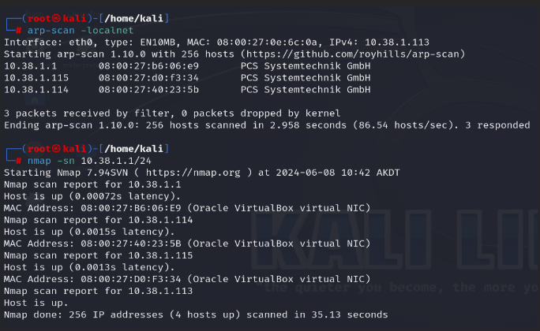
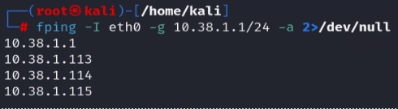

This lab outlines performing host discovery, port scanning, service version detection, and vulnerability scanning and detection using Nmap. The lab was conducted in a controlled environment to demonstrate various reconnaissance techniques.
This document contains step-by-step guides for performing active reconnaissance using Nmap and other tools. It covers host discovery, port scanning, service version detection, and web server enumeration. All activity was performed in a virtualized contained environment with three VMs. In this example, arp-scan, nmap, and fping are all utilized to perform network host discovery while the host fingerprinting stage primarily focuses on a Metasploitable2 VM.
Perform an arp scan, nmap ping scan, and an fping scan to discover what hosts are connected to the local network.
 

Use Nmap scripts to fingerprint services and gather detailed information.
Metasploitable2 is a vulnerable virtual machine intended for use as a target for testing security tools and demonstrating common vulnerabilities.
Official download page: https://sourceforge.net/projects/metasploitable/
License: BSD License, GNU General Public License version 2.0 (GLPv2)
Back to Lab Projects